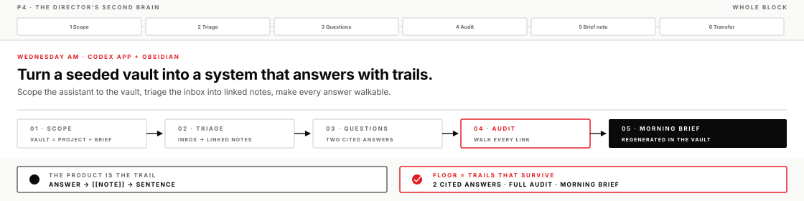
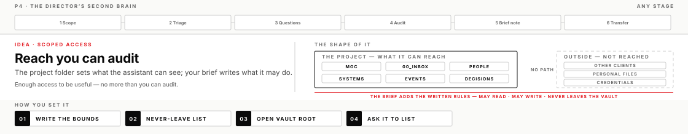
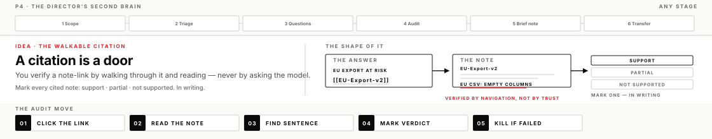

You put a thinking machine inside a knowledge structure you own, so its answers arrive as links you can walk instead of prose you must trust. By lunch, your vault answers director-level questions with citations that survive an audit.
Ask a chatbot a hard question and you get prose. It may be right, it may be confident and wrong, and either way the answer dies in a scrollback you'll never search again. Today you build the alternative: an assistant working inside a vault — Obsidian's name for a folder of plain-text notes that link to each other, displayed as a web you can navigate. When the machine works inside your structure, every claim in its answer can point at a note you can open. The difference between the two is not intelligence. It is the trail.
The scenario is close to most real desks. A director needs a straight picture of export risk versus SSO stability before Thursday's steering meeting, and the raw material is four messy captures sitting in an inbox: a Slack thread, an on-call paste, an undecided ship-order question, and the director's own ask. The facts exist, scattered, and the question spans all of them. You will turn the scatter into a system that answers — and then hold that system to a standard chat never meets: citations you personally walked.
What you will leave with
A vault that answers director-level questions with citations you can click, walk, and verify — plus the audit habit that keeps it honest
A triage method that turns raw captures into titled, linked notes a machine can navigate
The scope craft: you can bound an assistant's reach to exactly what you can audit, in the project and in the brief
A Morning Brief note you can regenerate Monday at work, inside your own system
A written verdict trail: which answers stood, which you revised or killed, and why
Before you start
Obsidian installed during pre-work. If it's missing, install it now — it's a short install and needs no key
The course repo on disk, so you can copy mission_flesh/p4/vault_seed/
Operator templates in your Codex app project: DIRECTION_BRIEF.md, OPERATOR_LOG.md
Lead operate-along
The lead runs this same page on screen — brief co-written live, triage directed in a build chat you can see, a trail audit narrated including the claim that gets killed. You still run your own chair, and you check a box when you finish the step, not when you watch it.
Before lunch · Harness case talk (45 min)
A real problem the lead solved with harnessed AI — 30 minutes of the case, 15 of discussion. Listen for problem → harness move → evidence, and today especially for how the trails held when the answer was challenged — what the speaker's system could not support is the interesting part. Notice one idea you may carry into the transfer step after measurement.

How a second brain actually works
Five ideas make a second brain trustworthy, and every one of them outlives this particular app.
Your structure, the machine's reach
A note in the vault is an ordinary Markdown file on disk. A wikilink — [[Note Name]] written inside a note — is plain text that Obsidian turns into a clickable connection to the note with that title. Nothing is hidden in a database: the assistant and Obsidian are looking at the same files, so when the assistant writes or links a note, it appears in Obsidian immediately. That shared ground is the whole trick. An answer built from your files can cite your files, and a citation to a file is something you can open.
Compare that with asking the same question in a bare chat. The model answers from whatever it absorbed in training plus whatever you pasted, the reasoning is invisible, and next month the exchange is unfindable. The chat is a workroom; the vault is the record. What goes wrong when people skip this distinction is a familiar graveyard: months of genuinely good AI conversations trapped in scrollback, none of it linked, none of it citable, all of it dead the day the chat history is cleared. At work, the rule that follows is simple — anything that must outlive the conversation gets landed in the structure before the conversation ends.
Scoped access is knowledge governance
In the Codex app, a project is a folder you open — and that folder is the assistant's working world. Open the vault folder as the project and the vault is what the assistant can reach; your tax returns, your other clients, and your credentials are not in the folder, so they are not in play. That is the structural layer. Your Direction Brief adds a written layer on top: what the assistant may read, what it may write, and what must never leave the vault — names, incident details, anything you would not paste into a status email.

Two layers, two different guarantees. The folder edge governs what can happen; the brief governs what may happen, and it only binds because you check it. The classic failure is opening the project one level too high "to be safe" — now the assistant's reach includes everything in your user folder, and you can no longer say what informed an answer. The craft here is the same one used to scope any aide's clearance: enough access to be useful, and no more than you can audit. It is worth pausing on how rare this move is — most people either lock the machine out of everything or open everything to it. Operators scope.
Retrieval is agentic search over your links
The assistant hasn't memorized your vault. When you ask a cross-vault question, it searches for likely files, opens them, and follows wikilinks from note to note — the same walk you would do by clicking, done at machine speed. That style of retrieval is called agentic search: the machine navigates and reads rather than matching keywords once. The practical consequence is easy to miss and changes everything about how you organize: folders alone are closets, links are roads. A question about export risk finds EU-Export-v2 because your Systems hub links to it and the Slack-thread note links to it — not because it sits in a well-named folder.
This is why triage quality decides answer quality before any question is asked. A vault of two hundred orphan notes with no links gives the machine nothing to walk, and cross-vault answers come back thin — or worse, confidently padded with invention where the roads ran out. A seeded hub note like MOC.md (a map of content — a note whose job is to link out to everything important) is the trailhead the machine starts from. At work, the ontology you would hand a new analyst on day one — people, systems, events, decisions, or whatever fits your desk — is exactly the map the machine navigates. Build it for the human and the machine gets it free.
A citation you verify by navigation
A note-link citation is a claim plus a door. The audit discipline is the one you built Monday — check citations with your own eyes, never by asking the model whether it is sure, which measures confidence, not truth — with the cite upgraded from a file tag to a link you can walk. The move has four beats: click the link, read the note, find the sentence that actually carries the claim, and mark a verdict in writing: support, partial, or not supported. Partial matters more than it sounds — a note that says a rumor is unreproduced only partially supports an answer that lists it as a live risk, and partial counts as failed when the answer stated the claim as fact.

What going wrong looks like: a citation to a note that does not exist (Obsidian renders those links faded, and clicking one offers to create an empty note instead of showing evidence), or a citation to a real note that never says what the answer claims. Plausible, cited, and wrong is the most dangerous combination in AI-assisted work, because the citation costume defeats the skepticism a bare claim would trigger. The only tell for an unwalked citation is that you never walked it. At work this becomes the standard you demand of any AI-produced brief, including ones other people hand you: every claim someone will act on carries a trail a skeptic can walk in under a minute. An answer that spans many notes with walkable links is a different product from a summary — a summary asks for trust; a trailed answer offers inspection.
The Morning Brief: a knowledge product that regenerates
On Monday you built a machine that makes the answer instead of a one-shot answer. The Morning Brief is that same pattern moved inside your own knowledge system: a dated note the assistant regenerates from the current state of the vault, every claim citing the note it stands on. Because the brief is generated from notes, it inherits the audit trail — and because the knowledge lives in the notes rather than the brief, you can delete the brief and regenerate it tomorrow after new intake without losing anything. The brief is disposable; the vault is not. That asymmetry is what makes it a product, not a document.
Two failure shapes to know. A brief that summarizes the chat instead of citing notes looks identical on day one and drifts silently by day five, because it regenerates from conversation memory instead of from the record. And a brief whose citations you never audit becomes a laundering machine: unverified claims acquire the costume of your own system and walk into your operating picture wearing it. The daily habit only compounds if the trails stay walked. At work, this is how a personal knowledge system starts earning its keep daily — the Morning Brief is the first regenerable product, and watchlists, decision logs, and handoff notes follow the same pattern.
Before you move on
A completed lesson means more than a successful run. A vault answering with fake or unopened citations is not yet, however smooth the answers read. Evidence must survive adversarial review. Full list: these P4 lesson outcomes.
If you get stuck
"The assistant can't see my vault." The project is almost always opened at the wrong folder. Reopen it at the vault root — the folder that directly contains MOC.md — then ask the assistant to list what it sees and compare with Explorer.
"My answers keep citing one giant note." Triage collapsed the inbox into a single summary file, and a question cannot span notes that do not exist. Split the material back into separate titled notes, link them from the hubs, and re-ask.
"My links don't resolve." Wikilinks match note titles exactly — [[Billing API]] and [[Billing-API]] are different notes. Pick one naming convention and rename via Obsidian itself, which updates the links that point at the renamed note.
Assistant suddenly erroring mid-morning? A capped API key fails as a 429 quota error that reads like an auth failure. Don't reinstall anything — flag it and check the key first.
When narrowing, narrow the data scope, not the judgment standard: fewer notes, same audit.